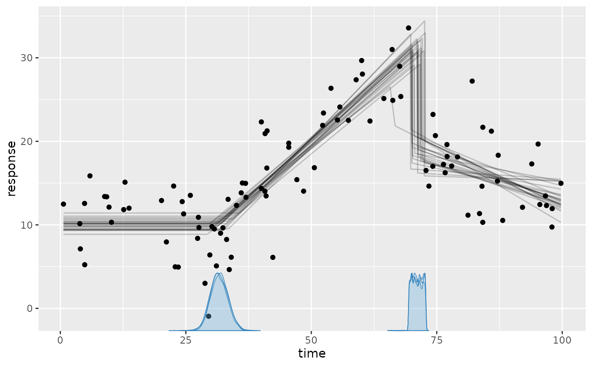
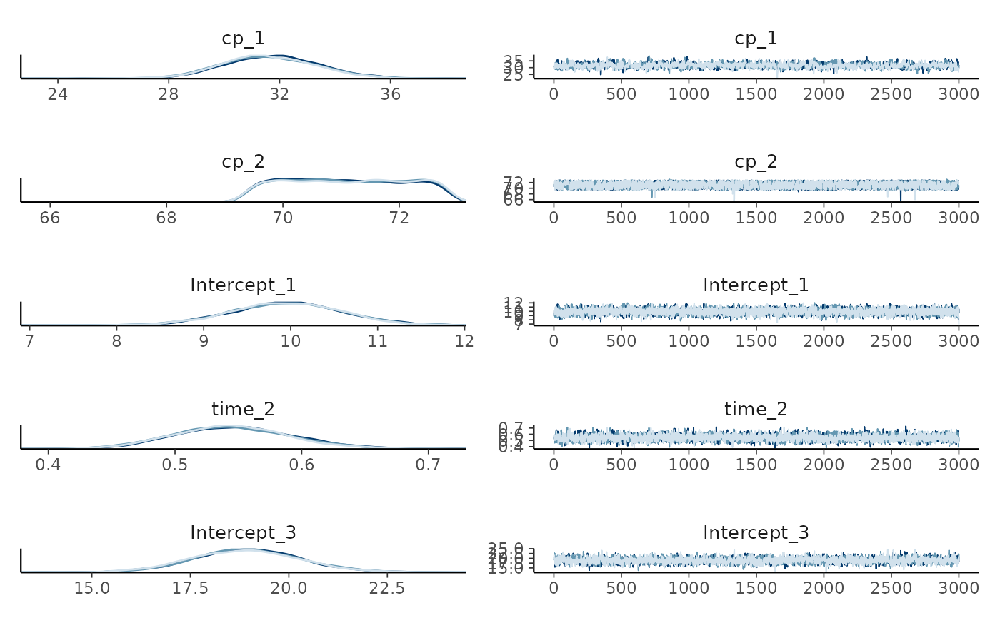
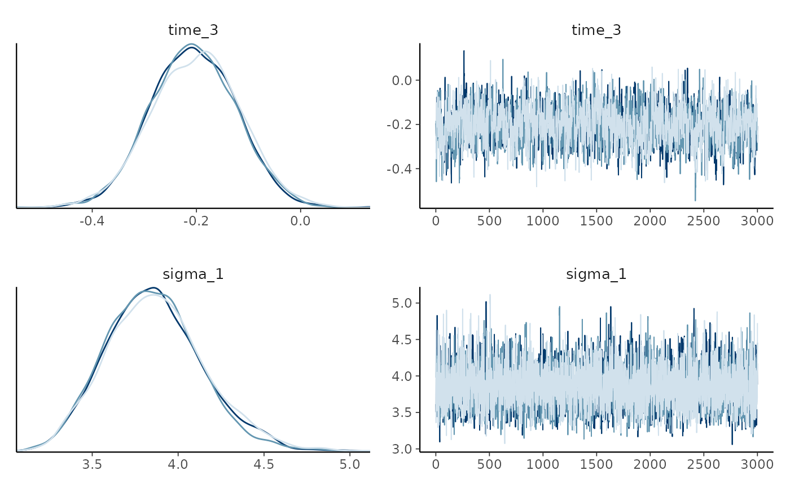
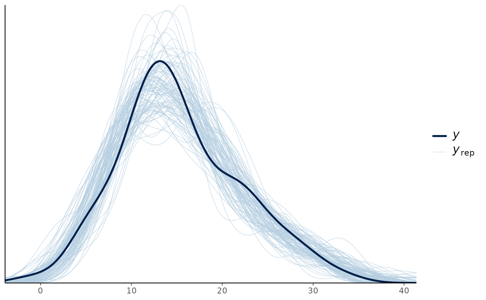
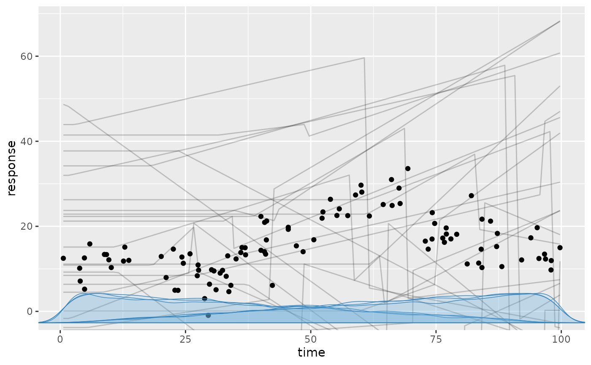

Given a model (a list of segment formulas), mcp infers the posterior
distributions of the parameters of each segment as well as the change points
between segments. See details or the mcp website.
Usage
mcp(
model,
data,
prior = list(),
family = gaussian(),
par_x = NULL,
sample = "post",
cores = NULL,
chains = 3,
iter = 3000,
warmup = 1000,
adapt = lifecycle::deprecated(),
inits = NULL,
jags_code = NULL,
seed = NULL,
diagnostics = list(),
quiet = FALSE
)Arguments
- model
A list of formulas, one for each segment, in the format
model = list(response ~ predictors, cp ~ predictors). See mcp-formula for how segments connect and the full formula syntax.- data
Table-like data in long format (data.frame, tibble, data.table, etc.) with syntactic column names. Missing values in the response variable are imputed using the posterior predictive.
fitted.mcpfitorpredict.mcpfitdetails how to see the imputed values.- prior
Named list, e.g.,
prior = list(cp_1 = "dunif(0, 100)", Intercept_1 = "dnorm(0, 1)"). List names are parameter names (cp_1,Intercept_1,x_2,sigma_1, etc.) and values are a distribution string (e.g.,"dnorm(0, 1) T(0, )"), a fixed value (e.g.,-2.1), or the name of another parameter to share its value. Data-calibrated, regularizing defaults are used where priors are not specified; see them withprior_summary(). See mcp-priors for the full syntax.- family
A supported family:
gaussian(),binomial(),bernoulli(),poisson(), ornegbinomial(), with a supported link function; e.g.,gaussian(link = "log").- par_x
String (default:
NULLwhich is auto-detect).- sample
One of
"post": Sample the posterior."prior": Sample only the prior. Useprior = TRUEexplicitly in plots, summaries, and other methods to select prior draws."both": Sample both prior and posterior. Plots, summaries, etc. will default to using the posterior. Useprior = TRUEto select prior draws."none"orFALSE: Do not sample. Returns an mcpfit object without sample. This is useful if you only want to check prior strings (fit$prior), the JAGS model (fit$jags_code), etc.
- cores
Deprecated and ignored. Configure parallel processing with a future plan instead, for example
future::plan(future::multisession, workers = 3). With the default future plan, chains are sampled sequentially. The argument remains available for backwards compatibility.- chains
Positive integer. Number of chains to run.
- iter
Positive integer. Number of post-warmup draws from each chain. The total number of draws is
iter * chains.- warmup
Positive integer. Number of initial iterations per chain which are discarded before sampling. Set higher if needed for sampler adaptation; use diagnostics to assess convergence.
- adapt
Deprecated; use
warmupinstead.- inits
A list of initial values for the parameters. This can be useful if a model fails to converge. Read more in
jags.model. Defaults toNULL, i.e., no inits.- jags_code
String. Pass JAGS code to
mcpto use directly. This is useful if you want to tweak the code infit$jags_codeand run it within themcpframework. R-side simulation and prediction methods continue to use the mcp-default formulas (with warning), so they may no longer match custom JAGS code.- seed
NULLor a positive integer. Seed for the JAGS random-number generators. IfNULL(default), the seed is drawn from R's random-number generator, soset.seed()beforemcp()also makes sampling reproducible.- diagnostics
Named list of diagnostic warning thresholds. Available elements are
rhat = 1.01,ess_bulk = 400,ess_tail = 400,ar = 0.10, andma = 0.10. An empty list uses these defaults; a partial list overrides only the supplied values. Set an element toNULLto disable that diagnostic, or useFALSEto disable all configurable diagnostic warnings. Insummary.mcpfit(),NULLinherits the settings used to fit the model, while a list orFALSEoverrides the diagnostic footer.- quiet
Logical. Suppress routine JAGS output and mcp sampling-status messages? Defaults to
FALSE.
Value
An mcpfit object.
Details
Here is the demo model, which ships already fitted as demo_fit (see also mcp_example("demo")):
model = list(
response ~ 1, # Plateau in the first segment (Intercept_1)
~ 0 + time, # Joined slope (time_2) in segment 2 which starts at cp_1
~ 1 + time # Disjoined slope (Intercept_3, time_3) at cp_2
)
Segment 2 continues from where the plateau left off, while segment 3 starts afresh with a new intercept. See mcp-formula for the rules of how segments connect, the full formula syntax, and the underlying model. See mcp-priors for how to specify priors.
References
Lindeløv, J. K. (2020). mcp: An R Package for Regression With Multiple Change Points. OSF Preprints. doi:10.31219/osf.io/fzqxv Introduces the
mcppackage, formula syntax, default priors, and workflow for regression with multiple change points across generalized linear and time-series models. Newer-than-2020 versions of the paper may be available at that link. Please cite the newest version.Carlin, B. P., Gelfand, A. E., & Smith, A. F. (1992). Hierarchical Bayesian Analysis of Changepoint Problems. Applied Statistics, 41(2), 389–405. doi:10.2307/2347570 Introduced the Gibbs sampling approach for continuous change points in segmented regression and hierarchical models, providing the computational foundation used by BUGS and JAGS.
Author
Jonas Kristoffer Lindeløv jonas@lindeloev.dk
Examples
# \donttest{
# Define the segments using formulas. A change point is estimated between each formula.
model = list(
response ~ 1, # Plateau in the first segment (Intercept_1)
~ 0 + time, # Joined slope (time_2) in segment 2 which starts at cp_1
~ 1 + time # Disjoined slope (Intercept_3, time_3) at cp_2
)
# Fit it and sample the prior too.
# future::plan(future::multisession, workers = 3) # Uncomment for parallel sampling
data = mcp_example_data("demo") # Simulated data example
demo_fit = mcp(model, data = data, sample = "both", seed = 42)
# See parameter estimates
summary(demo_fit)
#> Family: gaussian
#> Links: mu = identity; sigma = identity
#> Iterations: 3000 from 3 chains.
#> Segments:
#> 1: response ~ 1
#> 2: response ~ 1 ~ 0 + time
#> 3: response ~ 1 ~ 1 + time
#>
#> Change point parameters:
#> variable mean sd lower upper rhat ess_bulk ess_tail sim match
#> cp_1 31.66 1.729 28.39 35.122 1.00 1263 2302 30.0 OK
#> cp_2 71.10 1.026 69.46 72.770 1.00 3108 6357 70.0 OK
#>
#> Population-level parameters:
#> variable mean sd lower upper rhat ess_bulk ess_tail sim match
#> Intercept_1 9.95 0.650 8.67 11.217 1.00 3605 6303 10.0 OK
#> time_2 0.55 0.047 0.46 0.641 1.00 3062 5381 0.5 OK
#> Intercept_3 18.95 1.369 16.26 21.702 1.00 2373 5053 20.0 OK
#> time_3 -0.20 0.083 -0.37 -0.044 1.00 1293 2671 -0.3 OK
#> sigma_1 3.86 0.282 3.36 4.472 1.00 4705 4252 3.5 OK
# Visual inspection of the results
plot(demo_fit) # Visualization of model fit/predictions

plot_pars(demo_fit) # Parameter distributions


pp_check(demo_fit) # Prior/Posterior predictive checks

# Test a hypothesis
hypothesis(demo_fit, "cp_1 > 10")
#> hypothesis mean lower upper prob BF
#> 1 cp_1 - 10 > 0 21.65727 18.38791 25.12202 1 Inf
# Make predictions
head(fitted(demo_fit))
#> response time fitted sd Q2.5 Q97.5
#> 1 17.23552 76.33986 17.87692 1.0064291 15.90647 19.87063
#> 2 11.35171 83.51711 16.41150 0.7162152 15.01126 17.83740
#> 3 28.04995 60.18529 25.46466 0.8816487 23.74087 27.18653
#> 4 20.68198 74.72964 18.20568 1.1056040 16.04201 20.37707
#> 5 21.21364 85.88256 15.92854 0.7095198 14.52875 17.31987
#> 6 22.32282 40.05069 14.48433 0.6383321 13.18504 15.68505
head(predict(demo_fit))
#> response time predict sd Q2.5 Q97.5
#> 1 17.23552 76.33986 17.87340 3.995047 10.013497 25.73666
#> 2 11.35171 83.51711 16.42382 3.945918 8.673819 24.14969
#> 3 28.04995 60.18529 25.42993 3.962510 17.660021 33.26762
#> 4 20.68198 74.72964 18.25892 3.988994 10.290758 26.11628
#> 5 21.21364 85.88256 15.91635 3.964558 8.194152 23.66508
#> 6 22.32282 40.05069 14.51094 3.987088 6.769918 22.19356
head(predict(demo_fit, newdata = data.frame(time = c(55.545, 80, 132))))
#> time predict sd Q2.5 Q97.5
#> 1 55.545 22.994822 3.918535 15.189555 30.67688
#> 2 80.000 17.166440 3.977079 9.351826 24.90561
#> 3 132.000 6.464206 5.549632 -4.360363 17.36901
# Compare to a one-intercept-only model (no change points) with default prior
model_null = list(response ~ 1)
fit_null = mcp(model_null, data = data, par_x = "time") # fit another model here
demo_loo = loo(demo_fit)
#> Warning: Some Pareto k diagnostic values are too high. See help('pareto-k-diagnostic') for details.
null_loo = loo(fit_null)
loo::loo_compare(demo_loo, null_loo)
#> model elpd_diff se_diff p_worse diag_diff diag_elpd
#> model1 0.0 0.0 NA 1 k_psis > 0.7
#> model2 -55.0 7.9 1.00
#>
#> Diagnostic flags present.
#> See ?`loo-glossary` (sections `diag_diff` and `diag_elpd`)
#> or https://mc-stan.org/loo/reference/loo-glossary.html.
# Inspect the prior. Useful for prior predictive checks.
summary(demo_fit, prior = TRUE)
#> Family: gaussian
#> Links: mu = identity; sigma = identity
#> Iterations: 3000 from 3 chains.
#> Segments:
#> 1: response ~ 1
#> 2: response ~ 1 ~ 0 + time
#> 3: response ~ 1 ~ 1 + time
#>
#> Change point parameters:
#> variable mean sd lower upper rhat ess_bulk ess_tail sim match
#> cp_1 33.6889 23.2 2.00 83.6 1.00 8786 8787 30.0 OK
#> cp_2 66.9173 23.1 16.82 98.5 1.00 9067 8903 70.0 OK
#>
#> Population-level parameters:
#> variable mean sd lower upper rhat ess_bulk ess_tail sim match
#> Intercept_1 15.3288 16.9 -18.02 48.2 1.00 8678 8295 10.0 OK
#> time_2 0.0025 0.6 -1.18 1.2 1.00 8863 8999 0.5 OK
#> Intercept_3 15.2069 16.9 -17.56 48.4 1.00 8296 8498 20.0 OK
#> time_3 0.0056 0.6 -1.16 1.2 1.00 9193 8752 -0.3 OK
#> sigma_1 6.4442 7.0 0.19 24.5 1.00 8674 8762 3.5 OK
plot(demo_fit, prior = TRUE)

# Show all priors. Default priors are added where you don't provide any
prior_summary(demo_fit)
#> # A tibble: 7 × 5
#> parameter segment dpar prior bounds
#> <chr> <int> <chr> <chr> <chr>
#> 1 cp_1 2 cp dirichlet(alpha = 1) [min(tim…
#> 2 cp_2 3 cp dirichlet(alpha = 1) [cp_1, m…
#> 3 Intercept_1 1 mu normal(mean = 15.32512, sd = 16.86313) none
#> 4 time_2 2 mu normal(mean = 0, sd = 0.6026753) none
#> 5 Intercept_3 3 mu normal(mean = 15.32512, sd = 16.86313) none
#> 6 time_3 3 mu normal(mean = 0, sd = 0.6026753) none
#> 7 sigma_1 1 sigma student_t(df = 3, location = 0, scale = 6) [0.001, …
# Set priors and re-run
prior = list(
Intercept_1 = 15,
time_2 = "dt(0, 2, 1) T(0, )", # t-dist slope. Truncated to positive.
cp_2 = "dunif(cp_1, 80)" # change point to segment 3 > cp_1 and < 80.
)
fit3 = mcp(model, data = data, prior = prior, warmup = 2000, iter = 6000, seed = 42)
#> Warning: Some parameters may not have converged well:
#> * rhat > 1.01 or ess_bulk < 400 or ess_tail < 400: Intercept_3 and cp_1 and cp_2 and time_2
#> Inspect `summary(fit)` and `plot_pars(fit)`, and consider increasing `iter`/`warmup` or simplifying the model before trusting these results.
# Share coefficients across segments using same() (e.g., reuse Intercept_1 in segment 3)
model_same = list(
response ~ 1,
~ 0 + time,
~ same(1, as = 1) + time # Reuse Intercept_1 instead of estimating Intercept_3
)
fit_same = mcp(model_same, data = data, sample = FALSE)
# Show the JAGS model
demo_fit$jags_code
#> model {
#> # mcp helper values
#> cp_0 = CONST1_
#> cp_3 = CONST2_
#>
#> # Priors for population-level effects
#> cp_frac_1_ ~ dbeta(1, 2) # Relative fraction of remaining span (Uniform order statistics)
#> cp_1 = cp_0 + cp_frac_1_ * (cp_3 - cp_0) # Ordered change point
#> cp_frac_2_ ~ dbeta(1, 1) # Relative fraction of remaining span (Uniform order statistics)
#> cp_2 = cp_1 + cp_frac_2_ * (cp_3 - cp_1) # Ordered change point
#> Intercept_1 ~ dnorm(15.32512, 1/(16.86313)^2) # Mean intercept (rstanarm default)
#> time_2_rise_ ~ dnorm(0, 1/(0.6026753*(cp_2-cp_1))^2) # Autoscaled mean coefficient (rstanarm default); sampled as the rise over the segment
#> time_2 = time_2_rise_ / (cp_2 - cp_1)
#> Intercept_3_end_ ~ dnorm(15.32512 + time_3 * (cp_3 - cp_2), 1/(16.86313)^2) # Mean intercept (rstanarm default); sampled as the level at the segment end
#> Intercept_3 = Intercept_3_end_ - (time_3 * (cp_3 - cp_2))
#> time_3 ~ dnorm(0, 1/(0.6026753)^2) # Autoscaled mean coefficient (rstanarm default)
#> sigma_1 ~ dt(0, 1/(6)^2, 3) T(0.001,) # Positive residual SD calibrated on the response scale
#>
#> # Model and likelihood
#> for (i_ in 1:length(time)) {
#> # par_x local to each segment
#> x_local_1_[i_] = min(time[i_], cp_1)
#> x_local_2_[i_] = min(time[i_], cp_2) - cp_1
#> x_local_3_[i_] = min(time[i_], cp_3) - cp_2
#>
#> # Formula for mu
#> link_mu_[i_] =
#> (time[i_] >= cp_0) * (time[i_] < cp_2) * inprod(rhs_matrix_[i_, c(1)], c(Intercept_1)) * 1 +
#> (time[i_] >= cp_1) * (time[i_] < cp_2) * inprod(rhs_matrix_[i_, c(2)], c(time_2)) * x_local_2_[i_] +
#> (time[i_] >= cp_2) * inprod(rhs_matrix_[i_, c(3)], c(Intercept_3)) * 1 +
#> (time[i_] >= cp_2) * inprod(rhs_matrix_[i_, c(4)], c(time_3)) * x_local_3_[i_]
#>
#> # Formula for sigma
#> link_sigma_[i_] =
#> (time[i_] >= cp_0) * inprod(rhs_matrix_[i_, c(5)], c(sigma_1)) * 1
#>
#> # Likelihood and log-density for family = gaussian()
#> mu_[i_] = link_mu_[i_]
#> sigma_[i_] = max(1e-03, link_sigma_[i_])
#> response[i_] ~ dnorm(mu_[i_], 1 / sigma_[i_]^2)
#> }
#> }
# }